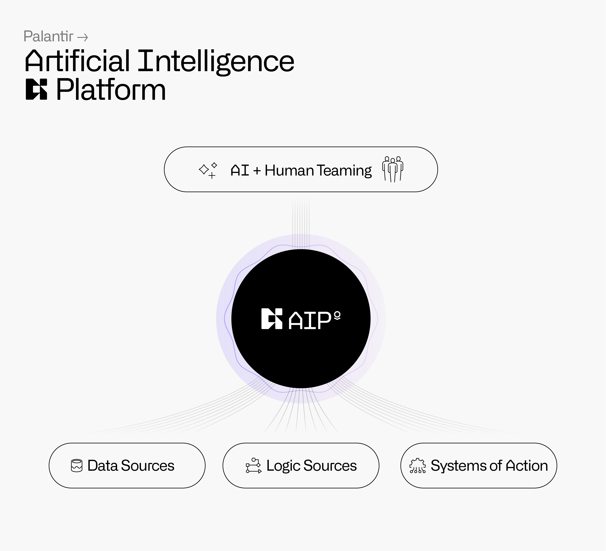

AIP for Defense
Defense and military organizations can wield the power of LLMs and cutting-edge AI - all on their network, from classified systems to devices on the tactical edge.
Defense and military organizations can wield the power of LLMs and cutting-edge AI - all on their network, from classified systems to devices on the tactical edge.

AIP Overview
Deploying AI & LLMs successfully and ethically in defense contexts will be a key advantage in future conflicts.
AIP enables Defense organizations to responsibly, effectively and securely, activate the power of Large Language models and cutting edge AI to fulfill their most critical missions, on their private network, safely and securely. By leveraging the latent power of organizational data alongside interfaces for intelligent, fast decision making, AIP provides next-generation tooling with industry leading guardrails, that’s driven by responsible core principals.
Capabilities to Combat Future Challenges
Ethical AI in Defense
Next-generation tooling.
Industry-leading guardrails.
Responsible core principals.
Over the past 20 years, our experiences have informed and enriched our approach to developing, building, and deploying AI technologies.
As we help bring these tools into defense and national security contexts, Palantir is committed to establishing and upholding a responsible approach. To do so, we have outlined seven core principals for ethical approaches, all of which are upheld in the capabilities highlighted above.
Beyond our own product, Palantir actively shares our expertise and learnings, by contributing to policy and thought leadership to define this new frontier.
This website provides information regarding expected or anticipated platforms, products or capabilities.
All information is provided as-is without any express or implied guarantee or warranty and Palantir may make changes to this information, or the platforms, products or capabilities described herein, at any time without notice and makes no commitment to update these materials.